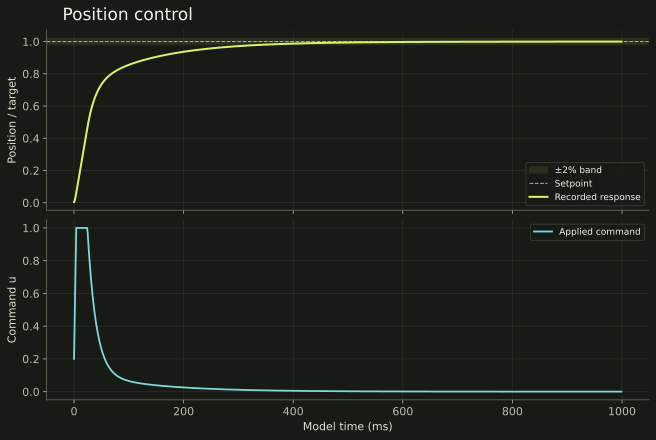
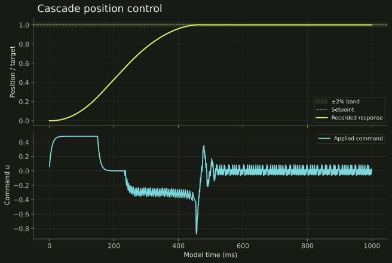
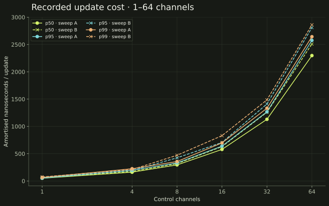

Arena-backed controller state, bumpless transfer and timing sweeps over 1–64 channels.
Recorded position response settles within ±2% at 342 ms in a simulated integrator plant. Response plots, percentiles and source CSVs are public.
Control response.
Execution cost.
Position tracking, cascade response and controller-update timing from the toolkit’s recorded CSV artifacts.
Step response


Latency

This is an amortised update microbenchmark, not scheduler jitter or end-to-end robot latency. Hardware identity and run flags are absent from the CSV. The two recorded sweeps are shown separately; neither is labelled as a safety-on/off comparison.
Exact recorded percentiles
| Sweep | Channels | p50 ns | p95 ns | p99 ns | p99.9 ns |
|---|---|---|---|---|---|
| A | 1 | 51.188 | 52.469 | 65.391 | 76.453 |
| A | 4 | 161.922 | 196.578 | 224.828 | 262.828 |
| A | 8 | 294.859 | 330.453 | 356.469 | 426.766 |
| A | 16 | 578.672 | 638.422 | 698.125 | 823.578 |
| A | 32 | 1130.094 | 1267.703 | 1332.922 | 1566.734 |
| A | 64 | 2297.484 | 2576.203 | 2643.047 | 3201.656 |
| B | 1 | 56.484 | 63.203 | 74.125 | 92.547 |
| B | 4 | 173.578 | 191.141 | 210.203 | 251.016 |
| B | 8 | 318.266 | 424.547 | 471.344 | 491.781 |
| B | 16 | 629.359 | 705.469 | 830.547 | 941.734 |
| B | 32 | 1259.109 | 1411.266 | 1486.062 | 1839.609 |
| B | 64 | 2508.844 | 2809.562 | 2860.547 | 3436.656 |
Technical deep dive Architecture, implementation & tradeoffs
The actuator limit feeds back into state.
- 01
Compute
u_raw = P + I + D + FFSetpoint weighting, gain scheduling and Tustin-discretised derivative filtering.
- 02
Constrain
saturate → rate → jerkPreserve each stage’s effect and the final applied command.
- 03
Reconcile
u_applied − u_rawFeed constraint error into anti-windup; align internal state on transfer.
- 04
Supervise
health + watchdogTrack timing, limiting hits and fallback state with the output.
Applied command → anti-windup correction → next integrator state. The controller’s memory follows what the actuator was allowed to do.
- Lifecycle
- Initialise → start → update → stop / reset
- Memory
- Arena-allocated workspaces reused on the update path
- Recording
- JSONL · MCAP · FlatBuffers · integrity checks
Execution architecture
- Allocated working buffers from a memory arena during initialisation and reused them on the update path.
- Defined controller dimensions, start/stop/reset lifecycle, measurement-validity masks, fixed-tick timing and runtime health.
- Preserved the unconstrained and constrained commands separately so each limiting stage can report its effect.
Control and constraints
- Implemented setpoint weighting, feedforward bias and a filtered derivative with Tustin discretisation.
- Added gain scheduling over configured breakpoints, with interpolation of gains and weights.
- Composed saturation, slew-rate and jerk constraints before anti-windup, plus bumpless state alignment and watchdog/fallback components.
Inspectability
- Included checks for derivative kick, bumpless transfer, saturation, rate and jerk behaviour, scheduling and deterministic execution.
- Built JSONL and MCAP evidence-recorder paths, a FlatBuffers schema, hash/round-trip checks and example traces.
- Kept runtime health attached to the output: deadline misses, clamp magnitudes, limiting hits and anti-windup correction magnitude.
The integrator must see the command that survives the constraints.
A controller can request far more than an actuator is allowed to deliver. Updating its internal state as though the raw request was executed creates a mismatch. The core preserves both values and feeds their difference into the anti-windup path after saturation, rate and jerk limiting.
The implemented controller family is PID/IMC-PID. Broader controllers described in the repository roadmap are ongoing work.